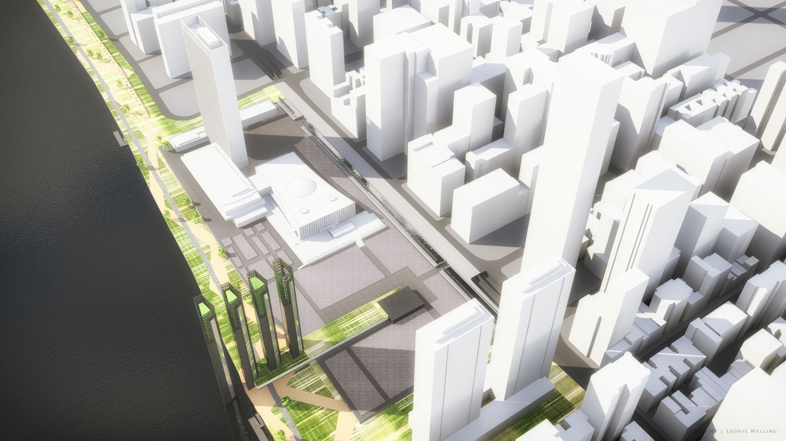

<link rel="import" href="../bower_components/polymer/polymer.html">
<link rel="import" href="../bower_components/iron-flex-layout/classes/iron-flex-layout.html">
<link rel="import" href="../bower_components/paper-card/paper-card.html">
<link rel="import" href="../elements/gm-cow-core.html">
<link rel="import" href="./imagine-instance.html?time=2">

<link href='../style/style.css' rel='stylesheet'>
<script src="../bower_components/d3/d3.js"></script>
<script src="../cowconfigs.js"></script>

<dom-module id="imagine-tweedescherm">
<style>
#scoreScherm {
    position: absolute;
    width: 100%;
    height: 100%;
    display: flex;
    justify-content: center;
    flex-direction: row-reverse;
}

#kaartjesOverlay {
	position: absolute;
    width: 100%;
    height: 100%;
    margin: 50px;
}

paper-card {
	position: absolute;
	font-family: "Avenir LT W01 65 Medium", sans-serif;
	font-size: 8pt;
	background-image: url('../style/logo.png');
	background-repeat: no-repeat;
	background-position: center top;
	width: 180px;
	padding-top: 60px;
	
	--paper-card-content: {
         @apply(--layout-horizontal);
         @apply(--layout-center-justified);
    };
}

paper-cardje .img {
	padding-left: 20px;
}

#Amsterdam1 {top:  0%;	left: 0%;}
#Amsterdam2 {top: 33%;	left: 0%;}
#Amsterdam3 {top: 67%;	left: 0%;}
#Amsterdam4 {top:  0%;	left: 12%;}
#Amsterdam5 {top: 33%;	left: 12%;}
#Amsterdam6 {top: 67%;	left: 12%;}

#Tussengebied1 {top: 15%;	left: 25%;}
#Tussengebied2 {top: 45%;	left: 25%;}

#Almere1 {top:  0%; left: 37%;}
#Almere2 {top: 33%;	left: 37%;}
#Almere3 {top: 67%;	left: 37%;}
#Almere4 {top:  0%; left: 50%;}
#Almere5 {top: 33%;	left: 50%;}
#Almere6 {top: 67%;	left: 50%;}

#Tussengebied3 {top: 15%;	left: 62%;}

#Utrecht1 {top:  0%;	left: 75%;}
#Utrecht2 {top: 33%;	left: 75%;}
#Utrecht3 {top: 67%;	left: 75%;}
#Utrecht4 {top:  0%;	left: 87%;}
#Utrecht5 {top: 33%;	left: 87%;}
#Utrecht6 {top: 67%;	left: 87%;}


/* entire container, keeps perspective */
.kaart {
position: absolute;
	perspective: 1000;
}
	/* flip the pane when hovered */
	.kaart.hover .flipper{
		transform: rotateY(180deg);
	}

.kaart , .front, .back {	
	width: 180px;
	min-height: 240px;
}
.front {
	background-image: url('../style/logo.png');
	background-repeat: no-repeat;
	background-position: center top;
	background-color: #154273;
}

/* flip speed goes here */
.flipper {
	transition: 0.6s;
	transform-style: preserve-3d;
	position: relative;
}

/* hide back of pane during swap */
.front, .back {
	backface-visibility: hidden;

	position: absolute;
	top: 0;
	left: 0;
}

/* front pane, placed above back */
.front {
	z-index: 2;
	/* for firefox 31 */
	transform: rotateY(0deg);
}

/* back, initially hidden pane */
.back {
	transform: rotateY(180deg);
}
#kaartjesOverlay {
	/*display: flex;
	justify-content:  space-around ;
	align-items: stretch;	
	top: 10px;
	bottom: 10px;
	left: 30px;
	right: 30px;
	position: absolute;*/
}
</style>
<template>
    <gm-cow-core id="cowcore" config="{{cowconfig}}" core="{{cow}}"></gm-cow-core>
    <imagine-instance id="instance"  
    	core="{{cow}}" 
    	scenario="{{scenario}}" 
    	team="{{team}}"
    	eigenschappen="{{eigenschappen}}">
    </imagine-instance>
    <div id="scoreScherm">
    	
    	<!--<video id="videotag" class='bg-video' loop="true" autoplay="true" src="http://download.blender.org/peach/bigbuckbunny_movies/big_buck_bunny_720p_stereo.ogg" type="video/ogg"></video>-->
    </div>
    <div id="kaartjesOverlay">
    	<template is='dom-repeat' items="{{eigenschappen}}" observe="_data">
			<div id$='[[item._data.id]]' class="kaart">
				<div class="flipper">
					<div class="front">	
						<div style="width:100%;height:100%">&nbsp;</div>				
					</div>
					<div class="back">			
						<paper-card >
							<div class="card-content">
							<center>
								<b>[[item._data.stad]]</b>
							</center>
							</div>
							<center>
								
							</center>
							<div class="card-content">
								<div><b>[[item._data.title]]</b></div>
								<div secondary>
									<span>[[item._data.text]]</span>
								</div>				
							</div>
						</paper-card>
					</div>
				</div>
			</div>
		</template>
    </div>
</template>
</dom-module>
<script>

Polymer({
	is: 'imagine-tweedescherm',
	properties:{
		scenario: String,
		teams: {
			type: Array,
			value: function(){
				return ['Team A','Team D','Team C','Team B'];
			}
		},
		cowconfig: {
			type: Object,
			value: function(){
				/*! Remember to set the correct config in the configfile!*/
				return window.cowconfig;
			}
		},
		eigenschappen: {
			type: Array,
			value: function(){return [];},
			notify: true
		}
	},
	ready: function(){
		this.scenario;
		var teamNr = 0;
		if(window.location.hash) {
			var hash = window.location.hash.split('#')[1];
			if(parseInt(hash)&&hash <4 && hash > 0) {            
				teamNr = hash;
			}
		}
		this.team = this.teams[teamNr];
		
	},
	attached: function(){
		this.$.videotag.height = this.$.scoreScherm.clientHeight;
		this.$.videotag.width = this.$.scoreScherm.clientWidth;		
	},
	flip: function(id) {
		var kaart = document.getElementById(id);
		kaart.classList.toggle('hover');
	},
	reset: function() {
		var kaarten = document.getElementsByClassName('hover');
		for (var i = kaarten.length-1;i>=0;i--){
			kaarten[i].classList.remove('hover')
		}		
	}
		
});
</script>